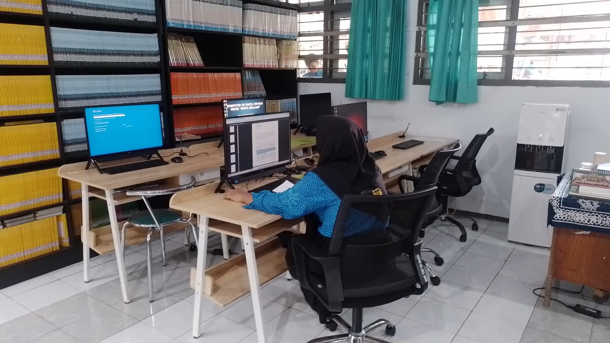

KOMPUTER
Komputer adalah salah satu alat elektronik yang sudah menjadi media belajar dan membaca bagi sebagian orang, dan oleh karena itu kami pustaka wiyata utama juga myediakan komputer bagi para pengunjung yang suka membaca menggunakan komputer sebagai medianya.
.jpeg)
MEJA DAN KURSI
Tidak lupa juga kami memberikan fasiitas meja dan kursi yang aman dan nyaman bagi para pengunjung yang membaca menggunakan buku atau koran sebagai medianya. dengan meja dan kursi yang aman dan nyaman, pengalaman membaca menjadi lebih fokus dan tenang karena tidak terganggu oleh goyangnya meja atau sakitnya pantat karena kursi yang kurang nyaman dan keras.
.jpeg)
RAK BUKU
Untuk mempermudah pengunjung mencari buku yang ingin dibaca di perpustakaan, kami pustaka wiyata juga menyediakan rak buku yang rapi dan mudah dijangkau oleh pembaca. dengan rak buku yang rapi dan mudah dijangkau, mempermudah pembaca untuk berganti buku dengan lebih cepat dan mudah.
.jpeg)
BERAGAM JENIS BUKU
Ragamnya jenis buku juga menjadi hal yang sangat penting bagi para pembaca,dan oleh karena itu pustaka wiyata juga menyediakan beragam jenis buku yang ada di indonesia seperti buku fiksi,non fiksi,novel,buku self impovement,buku pembelajaran,dan lain-lain.

AC (Air Conditioner)
Sering kali masalah terbesar pembaca bukanlah fasilitas yang kurang nyaman atau buku yang kurang lengkap, tetapi suhu yang gerah dan panas membuat membaca menjadi aktivitas yang melelahkan dan membuat keringat, oleh karena itu pustaka wiyata juga menyediakan AC yang terus menyala hingga waktu perpustakaan wiyata untuk tutup, sehingga suhu dan udara didalam perpustakaan menjadi sejuk dan dingin.

WIFI
Seringkali para pembaca yang menggunakan alat elektronik sebagai media membacanya lebih memilih menggunakan handhpone daripada komputer yang sudah di sediakan, oleh karena itu kami memasang wifi untuk memberikan akses internet gratis kepada para pengguna handphone agar mereka mampu membaca walaupun belum memiliki kuota internet.